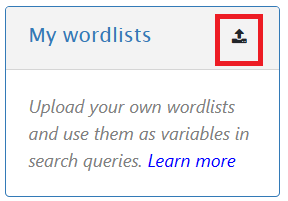
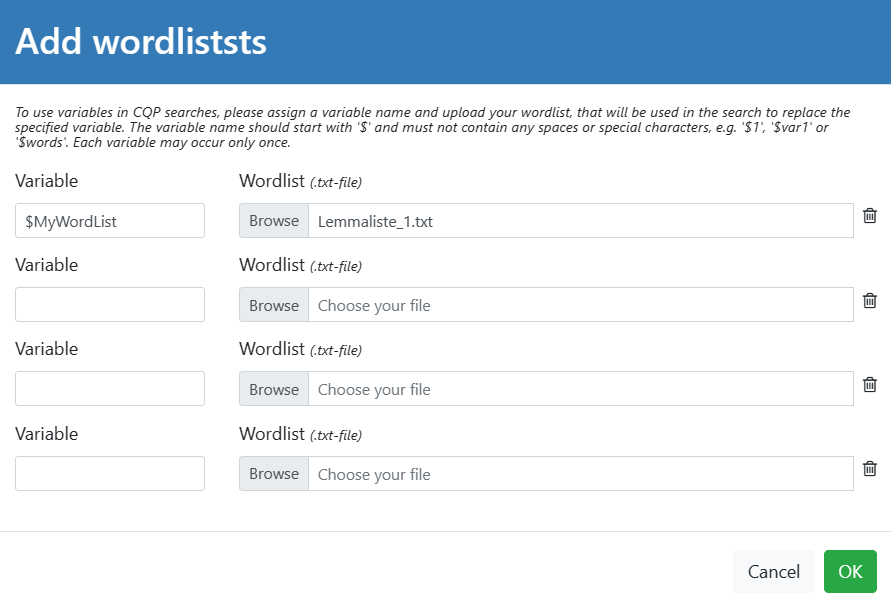
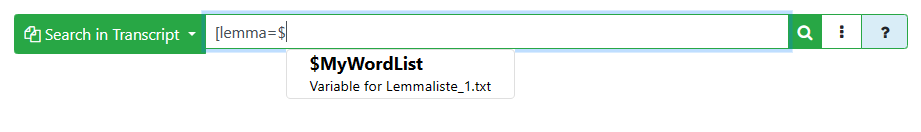
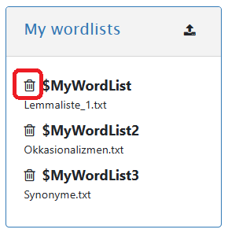

You are allowed to upload multiple wordlists. Clicking the green 'OK'-button will save them and display to you in the "My wordlists"-panel:

The search engine of ZuRecht is built on the MTAS Query Language that allows to use user-defined wordlists stored in variables. This function is useful if you want to search for a large number of words at the same time. Instead of typing them individually into the search query field, you can create a .txt file containing these words and include it directly in the search query as a variable.
The .txt document with you wordlists should contain one search item
per line. The search item can be either a simple lemma:
backen
Currywurst
Dessert
essen
...
or a regular expression pattern, e.g.:
Student(in|en)?
Studenten.*
.+platz
...
To upload you worlists, please use the upload button in the top right corner of the "My wordlists"-panel located below the corpora list:
Clicking the upload button will open a form where you can upload your wordlists and specifiy variables for them:
You are allowed to upload multiple wordlists. Clicking the green 'OK'-button will save them and display to you in the "My wordlists"-panel:
Now you can use your wordlists in the query in the following way:
You also can use the Query Builder to select one of your wordlists:
To delete the uploaded wordlists, click on the Trash-button next to the appropriate wordlist:
